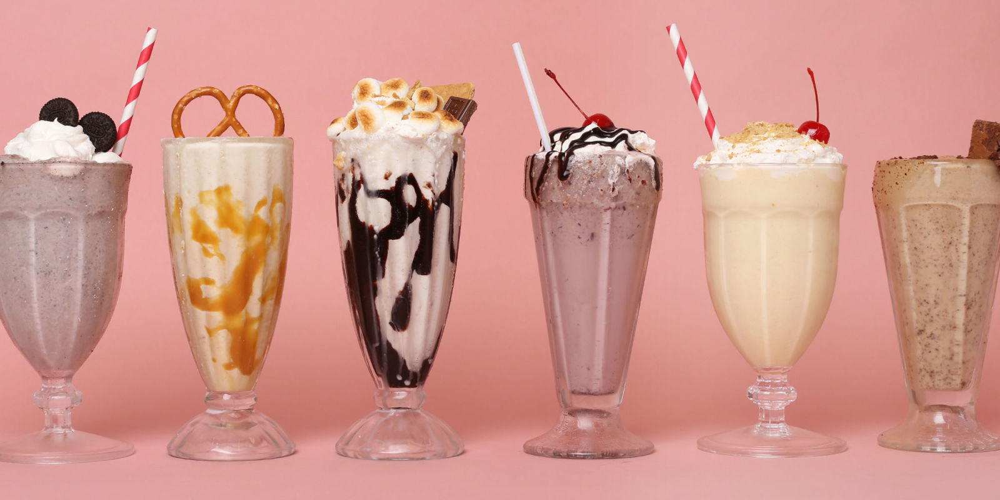
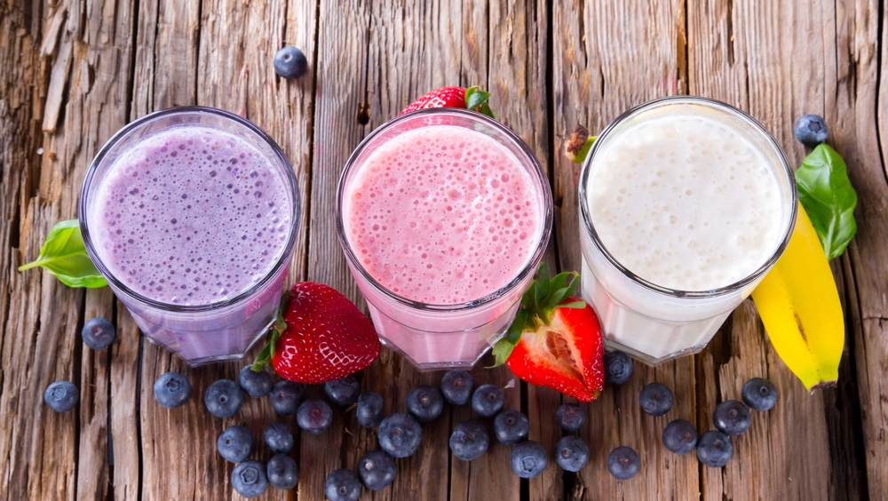
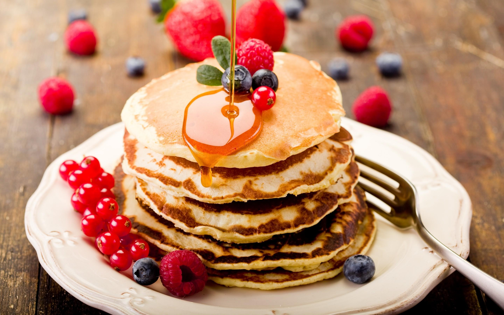

Als jullie een lekker ontbijt willen, zijn jullie aan het juiste adres.



Een smoothie is een niet-alcoholisch, koud drankje, meestal romig en met fruit. De ingrediënten zijn meestal ijs, vers fruit, melkproducten. Deze ingrediënten worden in een blender of een speciale smoothiemaker gemixt tot een romige substantie